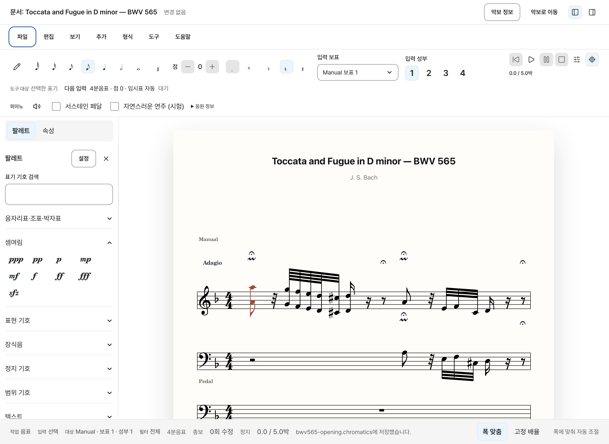

떠오른 음악을,
눈앞의 악보로.
한 음에서 시작해, 한 곡이 될 때까지.
음표를 적고, 소리를 확인하고, 악보를 나눠요.
macOS · Windows · Linux / 공개 프리릴리즈 제공

BWV 565 도입부를 실제로 불러온 개발 화면이에요. 현재 공개 빌드와 다를 수 있어요.
WRITE YOUR MUSIC
한 음씩 적다 보면,
나만의 곡이 보여요.
음표와 쉼표를 입력하고, 선택한 음과 기호를 다듬어요. 팔레트와 속성을 곁에 두고 악보의 흐름에 집중할 수 있어요.
MusicXML 악보 열기와 PDF 저장
플루트·첼로 4마디 예제로 MusicXML을 열고 총보를 PDF로 저장해 보세요.
- 예제 MusicXML 받기
- Studio에서 파일 → MusicXML 가져오기를 열어 예제를 선택하세요. 플루트와 첼로 두 파트가 보여요.
- 보기 → 총보·파트보 보기에서 총보를 선택하고, 파일 → 내보내기 설정 → PDF 변환으로 저장하세요.
띠로리 Studio 다운로드
컴퓨터의 운영체제에 맞는 설치 파일을 선택해 주세요.
설치 전에 궁금한 점
차근차근 시작해요.
어떤 컴퓨터에서 사용할 수 있나요?
macOS Universal DMG, Windows x64 설치 파일, Linux x86_64 AppImage를 제공해요. macOS ZIP과 Windows 포터블 실행 파일은 배포 기록에서 받을 수 있어요. 운영체제별 최소 사양은 배포 기록의 최신 안내를 확인해 주세요.
기존 프로젝트를 계속 열 수 있나요?
기존 Studio 프로젝트는 열 수 있어요. 새 셈여림선 종료 방식이나 앞꾸밈음 재생 설정을 저장하면 이전 버전에서 열리지 않을 수 있어요. 되돌아갈 때 쓸 원본은 따로 보관해 주세요.
설치할 때 보안 경고가 보이나요?
macOS 배포 파일은 Developer ID 서명과 Apple 공증을 완료했습니다. Windows 배포 파일은 미서명 개발 버전이므로 SmartScreen 경고가 표시될 수 있어요. 배포 기록에서 해당 버전의 설치 안내를 확인해 주세요.
Score와 악보가 자동으로 연결되나요?
자동 동기화나 앱 사이의 직접 전송은 제공하지 않아요. Studio에서 PDF를 내보낸 뒤 파일 앱 등을 통해 Score에서 직접 가져오는 방식이에요.